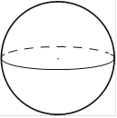

Впишите правильный ответ.
Площадь сечения шара плоскостью, проходящей через центр шара, равна 12. Найдите площадь поверхности шара.

КЭС: 7.4 Тела и поверхности вращения
Тип ответа: Краткий ответ
Источник ФИПИ